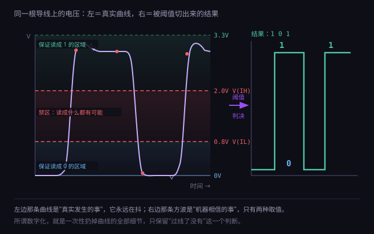
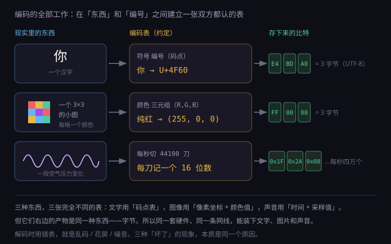
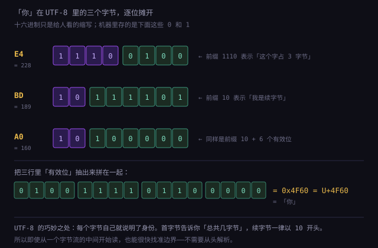
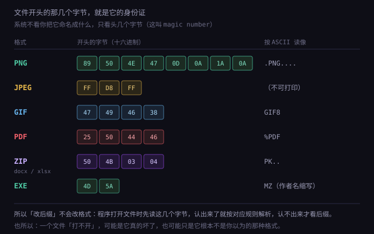

约 1.45 万字 · 4 张图 · 读完你能向任何人解释清楚「二进制」到底是怎么回事， 以及它为什么不是人类的任意选择
抽象的概念最好从具体的动作进入。现在请你真的按一下键盘上的字母 A，然后跟我走一遍这一秒钟里发生的事。
键盘里每个键下面都是一个开关。薄膜键盘是两层印着电路的塑料片，中间隔着一层带孔的绝缘层； 你按下去，上层的触点穿过孔，和下层的触点接触——电路通了。松手，弹片把它顶回去，电路断了。 机械键盘则是金属簧片接触，原理一样，只是手感和寿命不同。
注意这里已经出现了第一个关键事实：「按下」和「松开」这两种状态，天然对应「通」和「断」两种电路状态。 不是工程师硬要凑成两种，而是物理世界本来就给了你两种最容易被区分的状态。
如果每个键都单独拉一根线到电脑，104 个键就要 104 根线。所以键盘用的是矩阵扫描： 把按键排成若干行、若干列，芯片不停地一行一行通电，看哪一列有信号回来，就知道是哪一行哪一列的键被按了。 一颗几毛钱的单片机，每秒能扫几千遍。
扫描的结果被翻译成一个数字。以最常见的 USB 键盘为例，它遵循一份叫 HID 的标准表，
字母 A 对应的编号是 0x04。也就是说，键盘发给电脑的不是「字母 A」这个意思，而是一个编号。
USB 线里有一对差分信号线（D+ 和 D−）。传一个 0 或 1，靠的不是「有没有电」，而是两根线之间的电压差往哪个方向偏： D+ 比 D− 高，算一种；D− 比 D+ 高，算另一种。这样做的好处是：外界的干扰通常会同时抬高或压低两根线， 差值不变，于是噪声被抵消掉大半。
换句话说，在你按下 A 的那一瞬间，真正在导线上发生的事是： 电压差以极高的频率在「正偏」和「负偏」之间反复切换，每切换一次就代表一个比特。 U 盘插口那 480Mbps、USB 3.0 的 5Gbps，说的就是每秒能切多少次。
收到的比特流先被拆成「包」，包里带着那个编号 0x04。
操作系统把它交给当前焦点窗口，输入法和键盘布局再把它映射成字符：
英文布局下 0x04 → a；按住 Shift → A；中文输入法开着 → 它进候选词，暂不上屏。
最后，屏幕上那个 A 的字形被显卡画出来，而这个字形本身也是一组预先存好的点阵或曲线数据，
在文件里同样是一串比特。
上一节说「键盘传的是编号」。具体到最常见的 USB 键盘，这个「包」是固定 8 个字节，格式如下：
| 字节 | 内容 | 说明 |
|---|---|---|
| 第 0 字节 | 修饰键位图 | 8 个位分别代表左 Ctrl、左 Shift、左 Alt、左 Win、右 Ctrl、右 Shift、右 Alt、右 Win |
| 第 1 字节 | 保留 | 老键盘上用于厂商自定义，通常为 0 |
| 第 2~7 字节 | 六个按键的编号 | 同时按下的键，每个占一个字节；没按的填 0 |
举例：你按住左 Shift，再按 A，键盘发出的包是：
02 00 04 00 00 00 00 00
┬ ┬
│ └── 0x04 = A 键
└──────── 0x02 = 左 Shift 按下（第 1 位）注意这里有两个精巧的设计：修饰键单独用位图（因为它要和其他键组合）， 普通键用列表（因为要表达「同时按了哪几个」）。
因为普通键的槽位只有 6 个字节。这就是所谓的「6 键无冲」。 你在打游戏时遇到「同时按三个键就有一个没反应」，很多时候不是键盘坏了，而是这 6 个槽位被占满， 或者键盘内部的矩阵扫描出现了「鬼键」（ghosting）。
高端键盘宣传的「全键无冲（NKRO）」，做法是换一种报告格式：不用列表，而用位图—— 104 个键就用 13 个字节，每一位对应一个键。这样理论上能同时上报所有键。 代价是需要主机支持这种报告格式，所以很多键盘会保留一个「兼容模式」开关。
上一节的最后一句话值得单独展开，因为它是理解计算机的第一道门槛： 机器不处理意义，只处理可以被稳定区分的状态。
很多人第一次学编程时会有一种困惑：「电脑怎么知道 if (age > 18) 是什么意思？」
答案是：它不知道。它只做一件极其机械的事——把两个数放进一个比较电路，
这个电路的输出端要么是高电平，要么是低电平，然后 CPU 根据这个电平决定接下来从哪条指令继续。
「大于 18」这个含义，是你赋予的。
因为它虽然不懂意义，但极擅长按规则搬运符号，而数学恰好是一套纯粹的符号规则系统。 只要「加」「比较」「跳转」这几个动作是可靠的、可重复亿万次的，把这些动作串起来就能完成极其复杂的推导。
这是 1936 年图灵提出的那个想法的现实版：一台只会读写纸带、按固定规则移动的机器， 只要规则足够，就能计算任何「可计算」的东西。 「可计算」这个词很关键：不是所有问题都能被这种机器解决，但能被它解决的，它就能做到和任何机器一样好。
既然机器只处理「可区分的状态」，那么一个系统能处理多少信息，就取决于它能稳定区分出多少种状态。 一个开关只有两种状态，所以一位只能装 1 比特。 要在一位上装更多信息，就得让电压有更多档——这正是下一节要讨论的：为什么工程师最终放弃了这条路。
前面说「机器只搬运符号」。这句话在 1936 年被一个人变成了严格的数学定义，而那个定义至今统治着整个行业。
艾伦·图灵当时想回答一个纯数学问题：是否存在一种「机械的」方法，能判定任何一个数学命题是否可证？ 为了把「机械的方法」说清楚，他设计了一台想象中的机器：
就这样三个部件，没有内存、没有显示器、没有 CPU——但图灵证明了：任何「能按步骤算出来」的东西， 都能被这样一台机器算出来。
图灵接着做了一个更狠的构造：把「状态转移表」本身编码成纸带上的符号。 这样就能造出一台通用图灵机——它读到的纸带前半段是「某个机器的描述」，后半段是「数据」， 然后它就能模拟那台机器。
| 图灵机 | 冯·诺依曼架构 | |
|---|---|---|
| 是什么 | 一个数学定义，用来界定「可计算」的范围 | 一个工程方案，用来造真实的计算机 |
| 时间 | 1936 年，纯理论 | 1945 年，基于实际工程 |
| 组成 | 纸带 + 读写头 + 状态表 | CPU + 内存 + 存储 + IO，程序和数据存在同一内存里 |
| 关系 | 冯·诺依曼架构是「实现图灵机的一种方式」，但不是唯一方式（量子计算、神经网络都不是它的直接实现） | |
还有一个常被提起的「丘奇-图灵论题」：所有「直觉上可计算」的东西，都等价于图灵机可计算的东西。 这是论题，不是定理——因为「直觉上可计算」没法被严格定义。但它至今没有被推翻， 而且所有尝试过的计算模型（λ 演算、递归函数、细胞自动机）最终都被证明和图灵机等价。
现在进入物理核心。请先接受一个事实：现实世界里的电压是连续变化的。 它不会「跳」到 3.300V 然后稳稳停住，而是从 0 慢慢爬升，一路上有小抖动、有毛刺、有温度漂移。

如果你把这根线上的电压随时间画出来，得到的是图 1.1.1-1 左边那条曲线：上升沿是斜的，中间还有细小的锯齿。 如果机器要「精确记录」这个电压，它必须能够分辨 1.20V、1.201V、1.2013V……这在模拟电路里极难，且误差会一路累积。
工程师的做法是粗暴而聪明的：在中间画一条线，过线算 1，不过线算 0。 更准确地说，是画两条线——一条上阈值、一条下阈值。于是曲线被切成了一段段的方块，这就是「数字化」。
切的档位越多，能表达的信息越丰富，但每一档之间的差距就越小，越容易被噪声搞混。 这就是数字化的核心权衡：精度与鲁棒性成反比。
举个具体的例子。假设一条线满量程是 3.3V：
| 切几档 | 每档间隔 | 能表示几进制 | 问题 |
|---|---|---|---|
| 2 档（0/1） | 1.65V | 二进制 | 几乎没有，容错极宽 |
| 4 档 | 0.825V | 四进制 | 还能用，但已开始怕噪声 |
| 10 档 | 0.33V | 十进制 | 稍微一点干扰就串档 |
| 256 档 | 0.013V | 一个字节的量 | 在长导线上根本不可靠，只适合芯片内部 |
从这张表能读出整件事的答案：档位越少，每一档之间的「安全距离」越大，机器越不容易读错。 而两档是所有可能里最极端、也最安全的一档——两档之间的距离是满量程的一半。
「切成档位」这句话听起来很随意，其实背后有一整套数学。切得太粗会失真，切得太细会浪费， 而且有一个硬性下限：低于它，你采到的数据里会混进根本不存在的信号。
把一个连续信号数字化，要切两次：
两个方向各自决定了一种不同的失真：采样率不够会产生「混叠」，位深不够会产生「量化噪声」。
奈奎斯特-香农采样定理说：如果信号的最高频率是 f，那么采样率必须严格大于 2f，
否则无法无损还原。
为什么是两倍？直观理解：一个正弦波，每个周期至少要采到两个点（一个在上升段、一个在下降段）， 才能确定它的频率。只采一个点，你只能知道「此刻的值」，不知道它在往上还是往下。
人耳能听到的最高频率约 20kHz（年轻人接近这个值，年纪大了会下降到 15kHz 左右）。 所以采样率至少要 40000。工程师取了 44100，多出来的余量留给后续处理（滤波需要过渡带）。
位深决定每一个采样点能有多少个不同的值。CD 用 16 位，也就是 65536 个档位。 对应的动态范围（最响与最轻的比值）大约是 96 分贝——经验公式是「每 1 位约 6 分贝」。
| 位深 | 档位数 | 动态范围 | 用在哪 |
|---|---|---|---|
| 8 位 | 256 | 约 48dB | 老式游戏音效、早期采样器（底噪明显） |
| 16 位 | 65536 | 约 96dB | CD、绝大多数音频发布格式 |
| 24 位 | 1677 万 | 约 144dB | 录音与混音阶段（留出余量，后期再降） |
| 32 位浮点 | — | 理论上极大 | DAW 内部处理（不怕过载，可以超过 0dB） |
为什么录音用 24 位、发布用 16 位？因为录音时要留余量：歌手可能突然唱得很大声，24 位能扛住； 后期混音要反复处理，每次处理都会累积误差，位深越厚越安全。发布时降到 16 位，是因为人耳在正常聆听音量下听不出差别。
图像的「位深」是每个颜色分量用几位。常见的 8 位（每通道 0~255）能表示 1677 万种颜色， 这已经超过人眼能分辨的数量。10 位（每通道 0~1023）被称为「HDR 素材」，主要价值不在颜色更多， 而在于后期调色时不容易出现断层——把高光压暗、阴影提亮时，8 位图像会出现一圈圈的色带，10 位不会。
现在把「画一条线」这一步说得更精确。真实的数字电路不会只有一条阈值，而是规定了四个电压参数， 两两成对使用。
| 参数 | 全称 | 含义 |
|---|---|---|
VOL | Output Low | 输出低电平时，最多不超过多少伏（比如 0.4V） |
VOH | Output High | 输出高电平时，至少不低于多少伏（比如 2.4V） |
VIL | Input Low | 输入低于这个值，才保证被认成 0（比如 0.8V） |
VIH | Input High | 输入高于这个值，才保证被认成 1（比如 2.0V） |
注意 VOL 和 VIL 之间有一段（0.4V ~ 0.8V），
VOH 和 VIH 之间也有一段（2.0V ~ 2.4V）。
这两段就是噪声容限：前一级送出的「低」即使被干扰抬高 0.4V，后一级仍然认它是低。
而 0.8V 到 2.0V 之间那一大片，是禁区：落在这里的电压，没有任何保证—— 可能被读成 0，也可能被读成 1，还可能让电路进入一种半开半闭的状态，耗电剧增甚至发热烧毁。 这就是为什么数字电路里「悬空的输入引脚」是危险行为，必须用上拉或下拉电阻把它钉死在高或低。
因为功耗和电压的平方成正比。把电压从 3.3V 降到 1.8V，同样一次开关的能量消耗降到原来的 (1.8/3.3)² ≈ 30%。
手机要省电，就只能往下降。
代价是噪声容限变小了：1.8V 系统里，高电平和低电平之间的距离只有 1.8V， 留给干扰的余量只剩零点几伏。所以先进工艺的芯片对电源质量、布线、屏蔽的要求极端苛刻—— 你在示波器上看到的那些「电源纹波」，就是设计者最头疼的东西。
如果你拆开过主板，会看到 CPU 周围密密麻麻的电感和电容——那是「供电模块」，负责把 12V 变成芯片需要的各种电压。 而这些电压不是一种，是很多种，因为芯片内部分成了多个电压域：
| 电压域 | 典型值 | 为什么单独供电 |
|---|---|---|
| 核心（Vcore） | 0.8 ~ 1.35V，动态变化 | 算得越快越费电，所以要能随时调；核心走线短，可以用低压 |
| IO / 外设 | 1.8V 或 3.3V | 必须和外部设备的电平匹配，不能随便降 |
| 内存控制器 | 1.1 ~ 1.35V | 由内存条的标准决定（DDR4 是 1.2V，DDR5 是 1.1V） |
| 模拟 / PLL | 独立低噪电源 | 时钟电路对电源噪声极敏感，混在一起会抖 |
| 待机（RTC） | 约 3V 纽扣电池 | 断电后还要维持时钟和 BIOS 设置 |
因为功耗大致满足 P ≈ C·V²·f（C 是电容负载，V 是电压，f 是频率）。
注意电压是平方项：把电压降 20%，功耗差不多降 36%。
所以现代 CPU 的省电策略是「按需给压给频」：你在打字时，它跑到 1.2GHz、0.9V； 你点开游戏，它瞬间升到 4.5GHz、1.3V。这个机制叫 DVFS（动态电压频率调整）。 笔记本上你听到的风扇忽大忽小，就是它在不停地换挡。
顺带解释一个你天天见到的词：手机宣传的「大小核」。大核（性能核）电压高、频率高、面积大； 小核（能效核）电压低、频率低、但每瓦性能更好。系统按任务轻重把活派给不同的核—— 这本质上是在「同一颗芯片上放了几个不同的电压域」，让每个任务都跑在最合适的档位上。
上一节说的是「怎么判断一个电压是高还是低」。但只靠判断还不够—— 如果信号在导线上一路传下去，每经过一段就被干扰一点，传个十几级照样会糊掉。 真正让数字电路活下来的，是另一个机制：每一级门电路的输出，都会被重新拉满到接近电源或接近地。
这叫「再生」（regeneration）。它做的事是：输入不管多脏（只要还在阈值以内），输出都重新变成一个干净的、满幅的方波。 噪声被彻底扔掉，不会传给下一级。
假设有一条信号要经过 100 级电路，每一级都会引入一点误差（模拟电路里这是必然的）：
| 模拟电路 | 数字电路 | |
|---|---|---|
| 每级误差 | ±0.05V，无法消除 | 每级重新整形，误差归零 |
| 10 级后 | 误差累积到 ±0.5V，波形已明显变形 | 仍是干净的 0 或 3.3V |
| 100 级后 | 误差远超信号本身，完全失真 | 仍然干净——除非某一级判断错了 |
| 失效方式 | 逐渐变糊，可以容忍 | 突然翻转，一个比特直接错 |
光有阈值还不够，还得规定「什么时候看」。如果门电路随时都在看输入，那信号正在从 0 爬到 3.3V 的那段时间里， 输出会疯狂抖动。所以数字系统引入了时钟：只在时钟的某个瞬间（通常是上升沿）才采一次样。
这带来两个必须遵守的纪律：
这两条听起来像吹毛求疵，但它们决定了 CPU 能跑多快：时钟周期不能短于「信号从上一级传到下一级并稳定下来」所需的时间。 这就是主频有上限的物理原因之一，后面讲流水线时会再遇到它。
在数字计算机普及之前，人类造过大量模拟计算机：它们不用 0 和 1，而是用物理量本身来算。
| 机器 | 用什么算 | 算什么 |
|---|---|---|
| 计算尺 | 长度 | 乘除、开方、三角函数（精度约 3 位） |
| 微分分析仪（1927） | 齿轮与转盘的转角 | 解微分方程，用于火炮射表 |
| 潮汐预测机 | 滑轮与绳索的位移 | 预测潮汐，精度惊人 |
| 电子模拟计算机 | 电压与电流 | 飞行模拟、控制系统仿真 |
它们有一个数字计算机至今比不上的优点：连续、实时、没有量化误差。 用一根导线表示一个电压，它可以是 1.234567…V 的任意精度（理论上），不需要被切成 256 档。 解微分方程时，它是一瞬间「流」出结果的，不是一步步迭代算出来的。
四个致命问题，每一个都足以致命：
到这里，一个自然的疑问是：既然人类最习惯十进制，为什么不干脆让电压有十档，直接对应 0~9？
这个问题在历史上被认真尝试过。1958 年，莫斯科大学研制了一台叫 Setun 的计算机， 用的不是二进制，而是三进制——每个单元有三种状态：−1、0、+1。
有一个经典的数学结论：在「用固定数量的符号表示尽量多的数」这个目标下，最经济的进制是自然常数 e ≈ 2.718。
离它最近的两个整数是 2 和 3，其中 3 更接近，所以三进制的「信息密度/成本比」略优于二进制。
传说中的结论是：同样表示 −298 到 +298 的范围，二进制需要 9 位，三进制只需要 6 位。 Setun 一共造了约 50 台，在一些工程计算里表现出色，甚至比同期同价位的二进制机器更省电。
原因不在数学，在工程与生态：
| 问题 | 具体是什么 |
|---|---|
| 三种状态难做 | 两种状态可以用「通/断」天然实现；三种状态需要精确控制电压在三个区间，噪声容限一下缩水一半以上 |
| 没有现成零件 | 全世界都在生产二进制逻辑门，三进制器件要自己造，成本高、良率低 |
| 没有软件生态 | 程序员、编译器、教材、算法全是按二进制写的，换进制等于从零重建 |
| 维护困难 | 会修三进制机器的人极少，坏了就是一堆废铁 |
现在解决第二个大问题：就算只有两种状态，它凭什么能装下文字、图片、声音、电影、程序？
答案只有一句话：因为「表示」不是「像」，而是「一一对应」。
我们从不要求「比特必须长得像它表示的东西」。就像身份证号不需要长得像一个人。 只要有一张双方都认可的对照表，编号就能代表任何东西。 这张表，就叫编码。

把数字写成二进制，用的是和我们熟悉的十进制完全相同的规则，只是底数从 10 变成 2：
1101 表示 1×2³ + 1×2² + 0×2¹ + 1×2⁰ = 13。
这不是「编码」，这是数本身的另一种写法——它没有对照表，因为它不是映射，是同一个数的不同表示。
ASCII 规定：编号 65 代表大写 A，66 代表 B，97 代表小写 a。就这么简单，一张表。 中文没有这么简单，因为汉字有几万个，一个字节装不下，所以要用变长编码——那是 1.1.4 的内容。
一张 1920×1080 的图片，被切成两百万个小格（像素），每个格子的颜色用三个 0~255 的数表示（红、绿、蓝的强度）。 于是「一张图」变成了 600 多万个数字，每个数字 8 位——这就是「数字化图像」的全部含义。 它没有「拍下」光，它只是把光强切成了档位。
CD 音质的采样率是 44100Hz：每秒把空气压力测 44100 次，每次记一个 16 位的数。 为什么是这个数？因为人耳能听到的最高频率约 20kHz，根据采样定理，采样率必须高于信号最高频率的两倍， 所以 40000 出头就够，工程师取了 44100 这个稍高的整数。 「为什么是 44100 而不是 50000」这个问题，答案藏在人的耳朵里，不在电路里。
因为能被写下来的东西，本质上都是离散符号的有限序列：一段文字是字符序列， 一张图是像素序列，一首歌是采样点序列，一个程序是指令序列。 而任何离散符号都能编号，任何编号都能写成二进制。
所以「二进制能表示一切」的准确说法是：一切可以被切成离散单元、并且单元可以被编号的东西，都能用二进制表示。 注意前提是「可以被切成离散单元」——这也是为什么「把人的意识上传到电脑」在技术上远不是「存个文件」那么简单。
上一节说「一切可被切成离散单元的东西都能编码」。这句话里的限制条件值得单独展开， 因为它决定了计算机能力的边界——而且这个边界是数学证明过的，不是工程没做到。
数学上把「能一个一个列出来」的集合叫可数。整数是可数的（0, 1, -1, 2, -2…）， 有理数也是可数的（可以排成一个方格表斜着数），甚至「所有能被写出来的程序」也是可数的。
但实数不可数。康托尔用对角线法证明了这一点：假设你把所有 0 到 1 之间的小数排成一列， 然后构造一个新的数，让它的第 n 位和第 n 个数的第 n 位不同——这个新数必然不在表里。 所以实数的数量比整数「更多」，多到无法编号。
图灵在 1936 年构造了一个更具体的例子：是否存在一个程序，能判断任意一个程序在给定输入下会不会停机？ 他的证明只有三行，但极其漂亮：
H(P, I)，能判断程序 P 在输入 I 下会不会停。Evil(P)：如果 H(P, P) 说「P 会停」，那 Evil 就故意死循环；
如果 H 说「P 不会停」，Evil 就立刻停。Evil(Evil) 会停吗？如果它停，说明 H 判定它「会停」，那么按定义它应该死循环——矛盾。 如果它不停，说明 H 判定它「不会停」，那么按定义它应该立刻停——也矛盾。 所以假设不成立，这样的 H 不存在。
很多人把「上传意识」想成「把大脑扫描一遍，存成一个文件」。但从这一节的角度看，问题不在存储，在可计算性：
所以这件事远不是「硬盘够不够大」的问题。「数字化」能装下的，只有「可被离散化并且可被算法处理」的那部分世界。
顺便说一个和数据表示紧密相关的结论，因为它经常被误解：不存在「能把任何文件都变小」的通用压缩算法。
道理很简单：如果一个算法能把所有文件都变小，那么把它重复应用，最终所有文件都会变成 0 比特， 而 0 比特不可能还原出不同的内容——信息的量守恒。
所以压缩能省的空间来自「数据里有规律」：重复的字符、相邻像素的相似性、人耳听不见的频率。 一段真正的随机数据（比如加密后的文件）是压不动的，强行压反而会变大一点点。
一个字节是 8 个位，能表示 256 种状态。这 256 种状态本身没有任何含义， 怎么读，完全取决于你手上那张表。
以 11111111 这一串为例：
| 读法 | 得到 | 用在哪 |
|---|---|---|
| 无符号整数 | 255 | 像素亮度、数组长度、文件大小 |
| 有符号整数（补码） | −1 | 温度、坐标差、任何可能为负的量 |
| 字符 | ÿ（Latin-1 第 255 号） | 文本文件 |
| 颜色分量 | 该通道最亮 | RGB 里的 255,0,0 就是纯红 |
| 八个开关 | 八个都打开 | 权限位、状态标志 |
最后一种读法特别值得现在就说一句，因为它会贯穿整本书： 一个字节可以被当成八个互相独立的开关。这就是「位标志」。
比如 Linux 的文件权限，用三个比特表示「读、写、执行」：
rwx = 111 = 7，rw- = 110 = 6，
r-x = 101 = 5。所以 chmod 755 展开就是
111 101 101——属主可读写执行，其他人只能读和执行。
perm & 0b001，一次与运算出结果。
如果用三个字段，就要读三个值再比较三次。在需要判断亿万次的地方，省下的每一条指令都是钱。
上一节的例子都是单字节。一旦一个数字超过 8 位，就要用多个字节存， 于是出现一个新问题：高位字节放前面，还是低位字节放前面？
假设要存 0x12345678（四个字节：12、34、56、78）：
| 方式 | 内存里的顺序 | 谁在用 |
|---|---|---|
| 大端（Big-endian） | 12 34 56 78 | 网络协议、Java、部分 CPU（PowerPC、SPARC） |
| 小端（Little-endian） | 78 56 34 12 | x86 / x64、ARM（默认可切换） |
名字来自《格列佛游记》里「鸡蛋该从大的一端敲还是小的一端敲」。两个阵营都有道理： 大端读起来和人类写数字的顺序一致；小端在「把 32 位数截成 16 位」时不用改地址，硬件实现更简单。
78 56 34 12，
拿到大端机器上读，就变成 0x78563412——完全不同的数。
所以网络协议规定了统一的「网络字节序」= 大端，任何要跨机器传输的多字节数字，都必须先转换。
在 Windows 上用 PowerShell 或者 Python，几行就能验证：
import struct
struct.pack('<I', 0x12345678) # 小端 → b'xV4\x12'，即 78 56 34 12
struct.pack('>I', 0x12345678) # 大端 → b'\x124Vx'，即 12 34 56 78
这也解释了 UTF-16 文件开头那个 BOM（FF FE 或 FE FF）：
它其实是在告诉你「这个文件用的是小端还是大端」。UTF-8 没有这个问题，因为它按字节处理，不存在字节序。
前面都是概念。这一节我们把一个真实的文件拆开，看看「比特」到底长什么样。
请在桌面上新建一个文本文件，里面只写两个字：你好，保存为 UTF-8。这个文件的大小是多少？
答案是 6 字节。不是 2 字节。因为 UTF-8 里一个汉字占 3 个字节。 我们把这 6 个字节用十六进制打出来：
$ xxd 你好.txt
00000000: e4bd a0e5 a5bd ........
换个工具看也一样：
$ od -An -tx1 你好.txt
e4 bd a0 e5 a5 bd
e4 bd a0 是「你」，e5 a5 bd 是「好」。每个字节写成两位十六进制，
所以一个字节在十六进制里看起来是「两个字符」——这只是为了方便人看，因为 8 位正好能被 4 位一组分成两个十六进制位。

E4 BD A0 逐位展开成 24 个比特。注意每个字节的开头都有 1110、10、10 这样的前缀——那是 UTF-8 的「自描述」标记，告诉解码器这个字占几个字节。
因为它是人和机器之间最省事的翻译层：4 个比特正好对应 1 个十六进制位，
一个字节正好写成两位。你不用心算，一眼就能把 E4 还原成 1110 0100。
如果用十进制，一个字节是 255，你就得在脑子里做除法；如果用二进制，一长串 0101 谁也看不清。 十六进制在这两者之间找到了平衡点，所以它在调试、颜色、内存地址、哈希值里无处不在。
方法很朴素：看它的字节能不能被解释成合法字符。 如果大部分字节都落在可打印字符范围内（比如 ASCII 的 32~126），那它大概是文本； 如果出现了大量 0x00 到 0x1F 之间的控制字节，那它多半是二进制。
但更可靠的办法是看开头几个字节——这叫 魔数（magic number），是文件给自己贴的标签：

.jpg 改名成 .png 并不能真的转换格式——程序仍然会按开头那串字节去认它。| 格式 | 开头字节 | ASCII 里像什么 |
|---|---|---|
| PNG | 89 50 4E 47 0D 0A 1A 0A | .PNG.... |
| JPEG | FF D8 FF | （不可打印） |
| GIF | 47 49 46 38 | GIF8 |
25 50 44 46 | ||
| ZIP / DOCX / XLSX | 50 4B 03 04 | PK.. |
| Windows EXE | 4D 5A | MZ |
如果你用 Windows 记事本保存过一个 UTF-8 文件，它可能会在开头悄悄加三个字节：EF BB BF。
这叫 BOM（字节顺序标记），原本是用来标记「这个文件是大端还是小端」的，后来被拿来当「我是 UTF-8」的旗子。
它是个麻烦制造者。很多程序（尤其是脚本解释器、编译器、JSON 解析器）不认识它， 会把它当成正文的第一个字符，于是报出「意外的字符」这种莫名其妙的错。 如果你以后写代码遇到「明明文件里没这个字符，为什么报错」，先检查 BOM。
这是一个纯字节层面的细节，但每年都有人被它坑。在 ASCII 表里，编号 10 是 LF（换行，Line Feed）， 编号 13 是 CR（回车，Carriage Return）。这两个名字来自机械打字机：
打字机上这是两个独立动作，要换行必须都做。所以早期电传打字机用两个字符 CR LF 表示换行。
Unix 的开发者觉得「一个换行只要一个字符就够」，于是只留 LF。
Windows 继承了 DOS，保留了 CR LF。Mac 早期用 CR，后来也改成了 LF。
| 系统 | 换行 | 字节 |
|---|---|---|
| Windows | CR LF | 0D 0A |
| Linux / macOS（现代） | LF | 0A |
| 老 Mac（OS 9 之前） | CR | 0D |
后果是什么？一个一万行的代码文件，在 Windows 上比在 Linux 上大 1 万字节（约 10KB）。
更麻烦的是：如果 Linux 的脚本被带到 Windows 用过再带回来，可能多出一堆 ^M，
导致 bash: ./run.sh: /bin/bash^M: bad interpreter 这种经典报错。
core.autocrlf 就是在处理这件事：它让你本地存 CRLF、仓库里存 LF，
提交和检出时自动转换。这也是为什么团队协作时它经常是「合并冲突莫名出现」的元凶之一。
一个三十年前的打字机习惯，今天还在影响你的版本控制。
你右键看属性时，会看到两个数：「大小」和「占用空间」。前者是字节数，后者通常更大。 原因是文件系统按「簇」分配空间，而不是按字节。
NTFS 默认一个簇是 4096 字节。你写一个 1 字节的文件，它也要占一个簇（4096 字节）。 你写 4097 字节，它占两个簇（8192 字节）。这叫内部碎片。
所以一个装满几十万个小文件的目录（比如 node_modules、或者你站点的缩略图缓存）， 实际占用可能是「大小」的两三倍。这也是为什么「清理垃圾」类软件能把「释放了 20GB」喊得那么响—— 它把簇的浪费也算进去了。
上一节说「数字会坏」。那为什么你从没遇到过「文件里的字自己变了」？因为整条链路上有层层校验， 而且这些校验本身就是用比特算出来的。
校验的思路分三个层次，一层比一层强：
| 方法 | 怎么算 | 能查出什么 | 用在哪 |
|---|---|---|---|
| 奇偶校验 | 额外加 1 位，让「1 的个数」总是偶数 | 只能发现奇数个位翻转，且无法定位 | 老式串口、内存条（早期） |
| 校验和 | 把所有字节加起来，取低位 | 能发现大多数错误，但「加两次错成一样」时会漏 | IP 头、UDP、早期下载 |
| CRC | 把数据当成一个巨大的二进制数，除以一个约定的「生成多项式」，取余数 | 极强，能发现绝大多数突发错误 | 以太网帧、ZIP、PNG、磁盘扇区 |
| 密码学哈希 | SHA-256 这类单向函数 | 不仅能查错，还能防篡改（别人改不出同样的哈希） | 下载校验、git、区块链、密码存储 |
因为「相加」对顺序不敏感：01 02 和 02 01 加起来一样，校验和也一样。
而 CRC 把整段数据当成一个多项式做除法，位置变了结果就变。
更关键的是，它能保证「连续 k 位同时出错」一定被检出（k 小于等于多项式位数时）。
磁盘上的划痕、网线上的干扰，恰恰都是「连续一片出错」。
那就只能靠冗余——多存几份。这里有两个你天天在用但可能不知道名字的机制：
不是。它们是两种电压状态的代号。磁带上的磁化方向、光盘上的凹坑、SSD 里的电荷量， 都可以被叫做 0 和 1，但它们全都不是数字。数字是人的抽象，物理实现可以是任何能稳定区分两态的东西。
不会。二进制不是权宜之计，是物理上最优的选择：两态之间的安全距离最大，最抗噪、最省电、最容易批量制造。 只要还是用电来表示信息，二进制就不会被淘汰。真正在变的是「怎么把这套东西做得更小更快」，而不是「换一种进制」。
半对半错。量子比特确实可以处在「0 和 1 的叠加态」，但那不是「同时存了两个数」这么简单—— 它的状态是一个概率幅，而且一测量就坍缩成确定值。量子计算擅长的是特定类型的问题（因数分解、模拟量子系统）， 不是「所有计算都更快」。它更可能是「挂在经典计算机旁边的一块加速卡」，而不是替代品。
机械硬盘是接近这个说法的（磁畴方向）。但固态硬盘（SSD）存的是浮栅晶体管里的电荷量， 而且为了容量，一个单元要存 4 个甚至 16 个不同的电平（TLC/QLC），也就是说一个单元表示 2~4 个比特，而不是 1 个。 所以「一个比特对应一个物理单元」这个印象，在 SSD 上已经不成立了。
这是对的，而且 bit 这个词本来就是 binary digit 的缩写，由统计学家图基在 1947 年的一篇备忘录里造出来。 但要注意：bit 是信息量的单位，不是物理实体。一根线上可以每秒传几十亿个 bit，也可以一个 bit 都不传。
不完全是。以太网用的是编码后的差分信号，为了保持直流平衡，会把比特流先做一次变换（比如 4B/5B、8B/10B）， 再发送出去。所以线上实际出现的电平变化，和你以为的 0101 并不是一一对应的。 Wi-Fi 更远：它把比特调制到无线电波的相位和幅度上，肉眼根本看不出「0」和「1」。
这是最常见的一个简化说法，方向对，但因果反了。 电可以有无穷多种电压（这就是模拟电路），并不是「只有两种」。是因为只有两种状态最可靠， 工程师才选择只用两种，而不是物理上只能有两种。 这是一个「设计选择」，不是「物理限制」——这个区别，决定了你能不能想明白为什么模拟电路依然存在。
不是。摩尔定律的原话是「集成电路上可容纳的晶体管数目，约每两年翻一番」，说的是集成度，不是速度。 速度的提升来自很多因素（频率、架构、缓存、并行），而晶体管变多只是提供了材料。 而且这条「定律」早已明显放缓——现在更常见的说法是「每代性能提升 10%~20%」。
分两种情况。无损数据（文本、程序、zip）在传输和复制中确实不会失真，因为每个字节都有校验和纠错机制兜底； 但有损压缩过的数据（jpg、mp4、mp3）每存一次、每转一次码，都可能再掉一点质量。 而且「数字不会坏」也不成立：硬盘会有位腐化（bit rot），内存会有宇宙射线导致的翻转， 所以重要数据必须靠多副本 + 定期校验，而不是靠「它是数字的」。
单看一条指令，是的。但整台机器不是：多线程的调度顺序不确定、随机数来自硬件噪声、 浮点运算在不同 CPU 上可能有微小差异、网络和磁盘的时序每次不同。 所以「同样的程序跑两次结果不一样」是常态，尤其在并发场景。 工程上解决它的办法不是追求绝对确定，而是把不确定性关进可控的笼子里（加锁、定序、幂等）。
最后补一个几乎人人都会遇到的换算，因为它和「比特」直接相关，而且商家很喜欢在这里做文章。
| bit（比特） | Byte（字节） | |
|---|---|---|
| 符号 | 小写 b | 大写 B |
| 关系 | 1 B = 8 b | — |
| 用在哪 | 网络带宽（Mbps） | 文件大小（MB） |
所以「100M 宽带」的真实下载速度是 100 ÷ 8 = 12.5 MB/s，不是 100MB/s。
这不是运营商骗人，是单位不同：带宽按比特算，文件按字节算。
再往外一层，还有「1000 还是 1024」的老账：硬盘厂商按 1000 进制标容量（1GB = 10⁹ 字节）， 操作系统按 1024 进制显示（1GiB = 2³⁰ 字节）。所以一块标着 1TB 的硬盘， 在 Windows 里显示约 931GB——差的这 7% 不是被吞了，是两套进位制打架。
11111111 至少能给出三种不同的读法，请说出三种。
1. 电可以有无穷多种电压，是工程师选择只用两种，因为两态最可靠。
2. 因为落在这段区间内的电压没有任何保证，可能被读成 0 也可能被读成 1，还可能让电路半导通发热。
3. 每一级门都会把输出重新拉满到接近电源或地，噪声不累积；阈值判断只是「读」，整形才是「清」。
4. 赢的不是数学最优，而是可靠、便宜、有生态。
5. 人耳上限约 20kHz，采样定理要求两倍以上，取了个略高的整数。
6. 无符号 255 / 补码 −1 / 字符 ÿ / 纯红分量 / 八个开关全开（任答三种）。
7. 六个字节，UTF-8 里一个汉字 3 字节。
8. 不会。程序看开头魔数，不看后缀。
9. 4 个比特正好一位十六进制，一个字节正好两位，转换不需要心算。
10. 不是。TLC/QLC 一个单元存 3~4 个比特，靠区分多个电平实现。